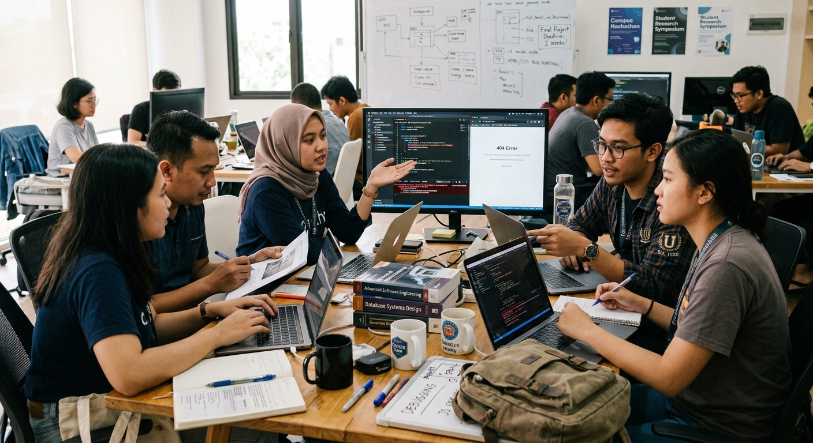

Mahasiswa D3 Informatika Gelar Lokakarya Web Dasar
Ringkasan : Lokakarya yang membantu mahasiswa memahami struktur HTML, CSS dasar, dan pengujian halaman melalui browser.

Latar Belakang
Kegiatan diselenggarakan untuk memperkuat fondasi sebelum mahasiswa mempelajari framework dan pengembangan aplikasi yang lebih kompleks
Rangkaian Kegiatan
- Peserta menyusun halaman profil
- Memperbaiki kesalahan HTML
- Menerapkan CSS
- Memresentasikan hasil melalui code defense singkat
“Kesalahan saat praktik menjadi bahan untuk memahami cara kerja browser, bukan sekadar sesuatu yang harus dihindari.”